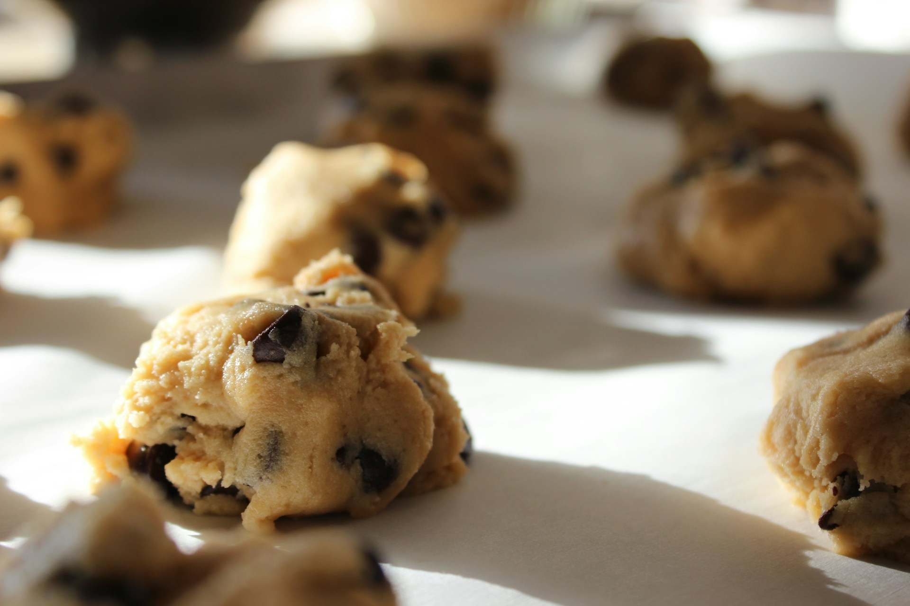

Chocolate Chip Cookies
- Strawberry Yogurt Cake
- Blueberry Muffins
- Chocolate Chip Cookies
- 115g butter, softened
- 115g caster sugar
- 1 egg, lightly beaten
- 1 tsp vanilla extract
- 175g plain flour
- 175g plain or semisweet chocolate chips
Method:
- Preheat oven to 180degC. Line baking trays with parchment paper.
- With a wooden spoon or electric mixer, cream butter and sugar in a mixing bowl until the mixture turns pale and fluffy.
- Beat in the egg gradually. Mix well after each addition. Add in vanilla extract, mix well.
- Sift the flour over the mixture, fold in with wooden spoon or a spatula. Fold in the chocolate chips.
- Drop tablespoonfuls of the cookie dough onto the prepared baking tray. Leave some space between the cookies to allow for spreading. Flatten each cookie dough slightly with the back of a fork, keeping the shape as even as possible.
- Bake for 10 mins or until golden. Transfer to a wire rack to cool completely.
